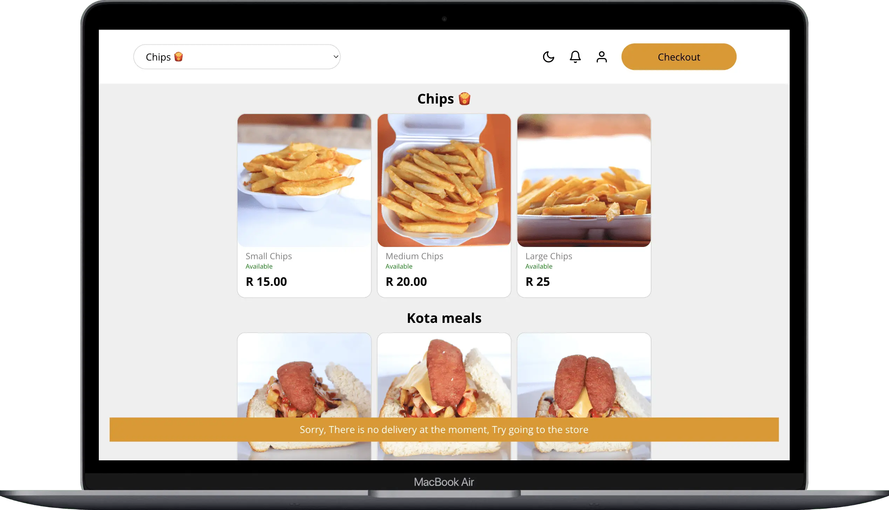

01 / food ordering
Restaurant storefront and order operations.

Rasking Fast Food
A customer-facing restaurant storefront for browsing menus and placing online orders, connected to a POS system for managing incoming orders and status updates.